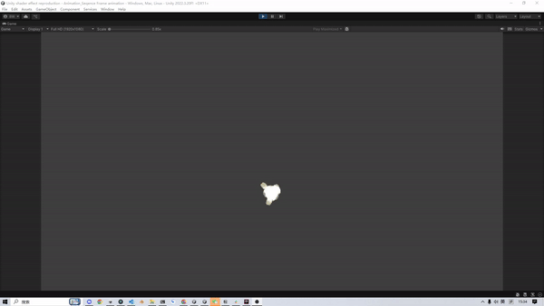
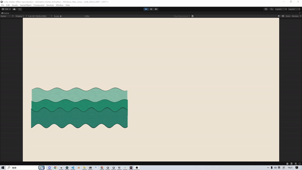
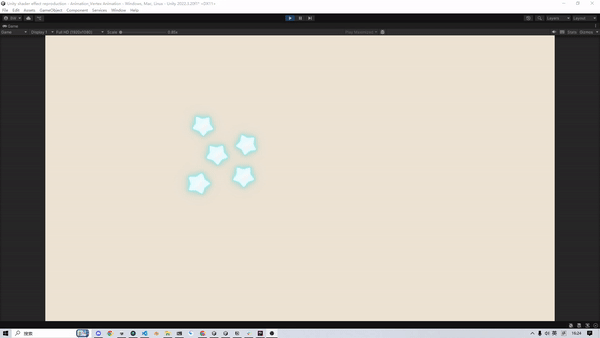
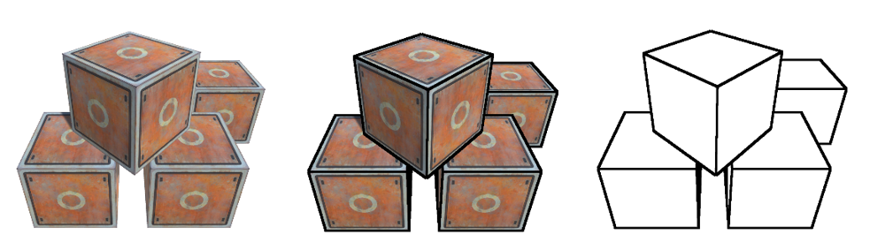
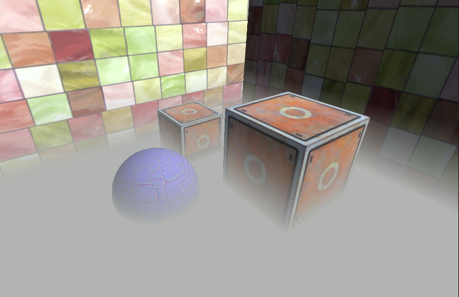
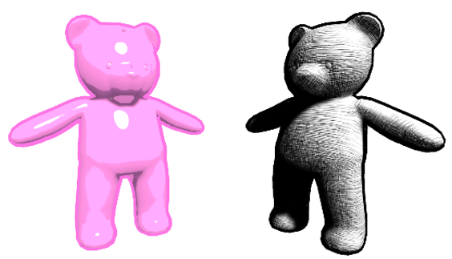
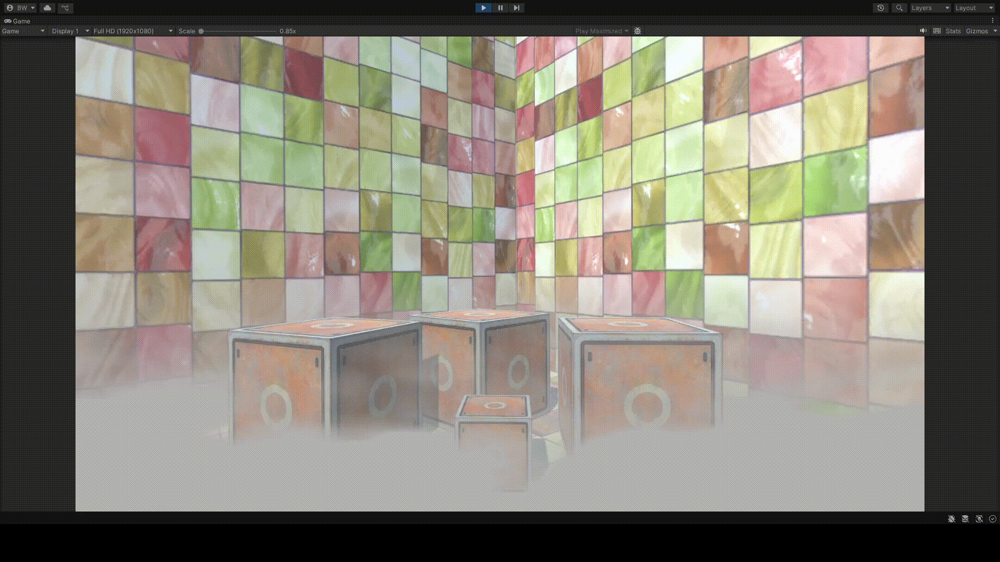
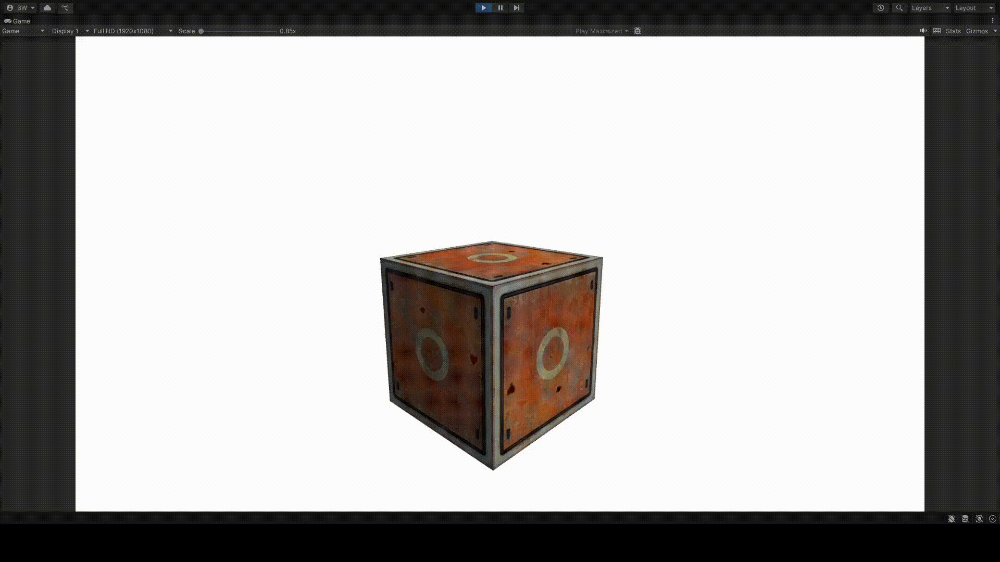
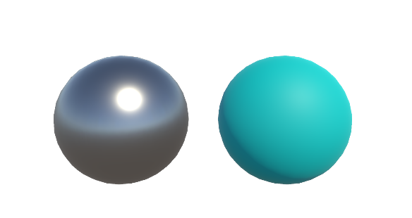

Writing · Unity shaders
Use shader code in Unity to reproduce art effects
I used shader code in Unity to reproduce some classic art effects. The following is a demonstration of the effects. This series is based on the book "Unity Shader 入门精要" by Feng Lele and its reference code library. I wrote the code to reproduce the effects in the book and added detailed comments to the shader code in the code block, which is easy for readers to understand. I wrote a blog for each chapter of this series and posted it on my blog platform. All the codes of this project are at Code repository.
False Color
Basic Lighting

Basic Texture

Transparency

Complex Lighting

Complex Texture


Animation




Image Processing


Depth and Normal Textures



Non-photorealistic Rendering

Noise



Surface Shader


PBS
